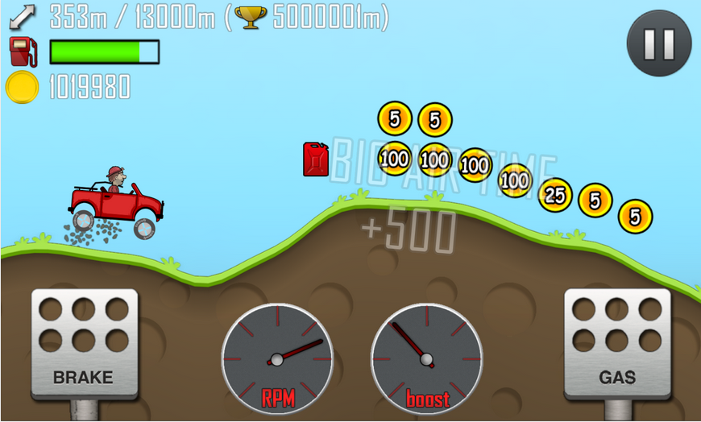
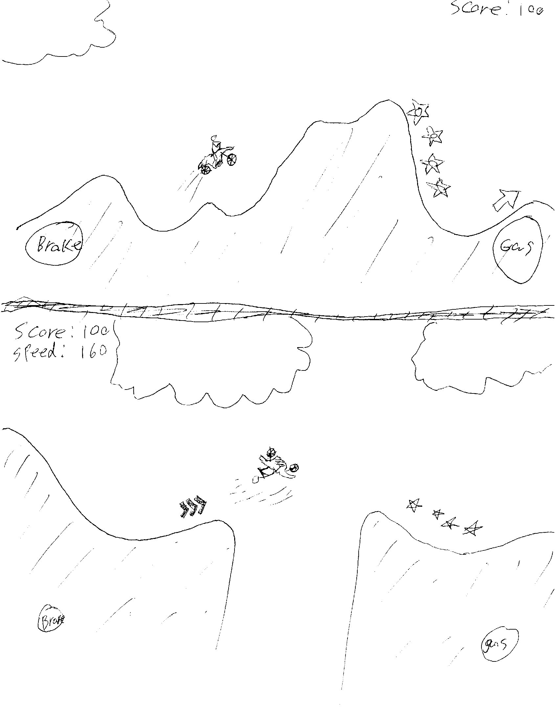
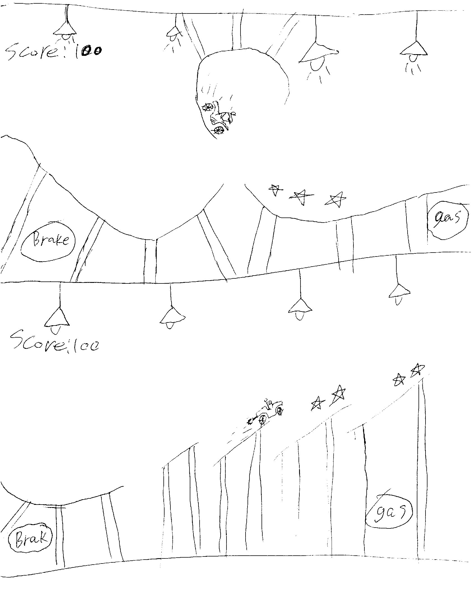

iTrials
I. High Concept
A sidescrolling trials game like Hillclimb Racing.
II. Genre
2D Racing
III. Platform
iOS Universal
IV. Story
You are a trials racer on a mission. That mission is to complete the demanding courses found at the iOS XTreme Motorsport park.
V. Esthetics
Graphics style - Maybe Stick Figures with some elements having detail for a contrasting look
Sound - Motor sounds. Background music. Etc
VI. Gameplay
Mechanics
Gas and Throttle which puts torque on the back wheel causings the vehicle to tilt
Should the above mechanic not work as well as it does with Hillclimb racing we can implement a separate "lean" mechanic
Control
Touch controls
Potentially Accelerometer controls
Teaching the game/New user experience aka "Onboarding"
The player will be introduced the game with simple level progression. The levels will get slowly more difficult introducing more skills to the user
Player learning
The player will need to learn how to effectively throttle and balance the vehicle without flipping on its rider/roof
VII. Screenshots
Inspiration
Mock-ups
 IX. About the developer(s)
Alex Fuerst and Chad Karon